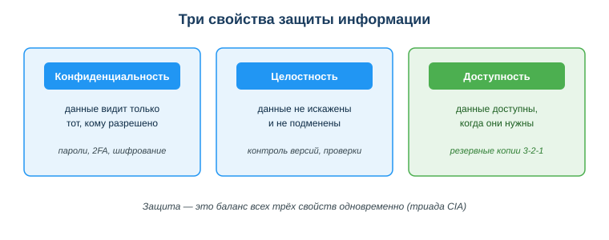

Применять основы информационной безопасности и цифровой гигиены
Практическая ситуация
Ты выложил в портфолио скриншот рабочего экрана — красиво, видно код. А через день кто-то воспользовался твоим API-ключом, который был виден в углу экрана: набежал счёт за чужие запросы. Один невнимательный шаг — и утекли и твой секрет, и почты клиентов с того же экрана.
Так теряют данные чаще всего: не из-за «хакеров в капюшонах», а из-за мелких бытовых ошибок. Защита — это не паранойя, а набор простых ежедневных привычек. Их и разбираем.

Что ты научишься делать
- составлять и хранить надёжные пароли в менеджере;
- защищать аккаунты и устройства базовыми мерами (2FA, обновления, копии);
- соблюдать приватность и безопасно обращаться с персональными данными и секретами проекта.
Почему это важно
Цена ошибки растёт: один утёкший пароль или ключ открывает доступ ко всему — почте, деньгам, рабочим системам. Привычки цифровой гигиены защищают тебя каждый день и почти не отнимают времени, если настроены один раз.
Связь с профессией: разработчик отвечает не только за свои данные, но и за код и данные пользователей. Утёкший в репозиторий ключ или незакрытая уязвимость — это уже не личная неприятность, а инцидент, за который отвечает команда. Цифровая гигиена — часть профессиональной культуры.
Учимся читать схему
Посмотри на схему трёх свойств защиты выше. Ответь на вопросы:
- какое свойство нарушается, если твой пароль узнал чужой человек?
- какое свойство страдает, если кто-то незаметно изменил данные в базе?
- какое свойство теряется, если из-за поломки диска файлы стали недоступны?
Главное понятие
Цифровая гигиена — набор повседневных привычек и правил, которые поддерживают безопасность твоих данных, аккаунтов и устройств: надёжные пароли, 2FA, обновления, резервные копии и осторожность с данными.
Проще: безопасность — это не один «волшебный» антивирус, а ежедневные мелкие действия, как мытьё рук. Все вместе они закрывают три свойства защиты: конфиденциальность, целостность и доступность.
Три кита защиты: пароли, доступ, резервные копии
Пароли
- Длина важнее сложности: длинная фраза
dom-kniga-veter-2026 надёжнее коротких P@ss1.
- Уникальный пароль на каждый важный сервис — чтобы утечка одного не открывала всё.
- Хранить в менеджере паролей под мастер-паролем, не в заметках и не в браузере на чужом ПК.
Доступ
- включи двухфакторную аутентификацию (2FA) везде, где есть: второй фактор подтверждает вход помимо пароля;
- выходи из аккаунтов на чужих устройствах, не давай приложениям лишних разрешений;
- ставь обновления системы и программ — они закрывают известные уязвимости.
Резервные копии
- правило 3-2-1: 3 копии, на 2 носителях, 1 — вне дома или в облаке;
- проверяй, что копия реально восстанавливается, — копия без проверки не копия.

Приватность и персональные данные
Персональные данные (ФИО, ИИН, телефон, фото) защищены Законом РК «О персональных данных и их защите». Правила: не публиковать чужие данные без согласия; следить за цифровым следом (данными о тебе в сети); для разработки использовать тестовые/обезличенные данные, а не реальные.
Мини-кейс
Студент выложил скриншот рабочего экрана, где видны токен API и почты клиентов. Это утечка: токен — секрет (конфиденциальность), почты — персональные данные. Следующий шаг: перед публикацией закрывать чувствительные данные и не коммитить секреты — выносить их в .env и добавлять файл в .gitignore.
Разбор типичной ошибки
Ошибка. Записать ключ API прямо в код и закоммитить в репозиторий.
Почему это ошибка. Ключ навсегда остаётся в истории git, даже если потом удалить его из файла. Боты сканируют публичные репозитории и находят такие ключи за минуты — счёт и доступ уходят чужим.
Как правильно. Хранить секреты в файле .env, добавить .env в .gitignore, а уже утёкший ключ немедленно сменить (отозвать старый).
Практика
Ответь письменно:
- Сравни пароли
Qw1!, dom-kniga-veter-2026, 123456 и сформулируй правило надёжного пароля.
- У студента все файлы только на одном ноутбуке. Распиши план резервного копирования по правилу 3-2-1.
Образец (часть ответа на пункт 1): «Надёжнее dom-kniga-veter-2026: длинная фраза. Правило — длина важнее символьной сложности, плюс уникальность пароля для каждого сервиса».
Самопроверка
- Я умею составить надёжный пароль и знаю, где его хранить.
- Я знаю, что такое 2FA и правило резервного копирования 3-2-1.
- Я понимаю, как безопасно обращаться с персональными данными и секретами проекта.
Подумай
- Какие из твоих личных привычек уже соответствуют цифровой гигиене, а какие нет? Что исправишь сегодня?
- Почему утечка ключа из рабочего проекта — это ответственность команды, а не только одного разработчика?
Итог
Что теперь делать:
- длинные уникальные пароли + менеджер паролей + 2FA — это конфиденциальность;
- резервные копии по правилу 3-2-1 с проверкой восстановления — это доступность;
- не публикуй чужие персональные данные, следи за цифровым следом;
- секреты (токены, ключи) — в
.env, не в коде и не в скриншотах.
Полезные ссылки
Источник: ГОСО ТиПО (приказ МП РК № 348); Закон РК «О персональных данных и их защите»; DigComp 2.2 (область «Безопасность»); материалы по цифровой гигиене.
Материал разработан рабочей группой ТОО «Колледж Хекслет Казахстан» и одобрен к использованию в обучении решением Педагогического совета.